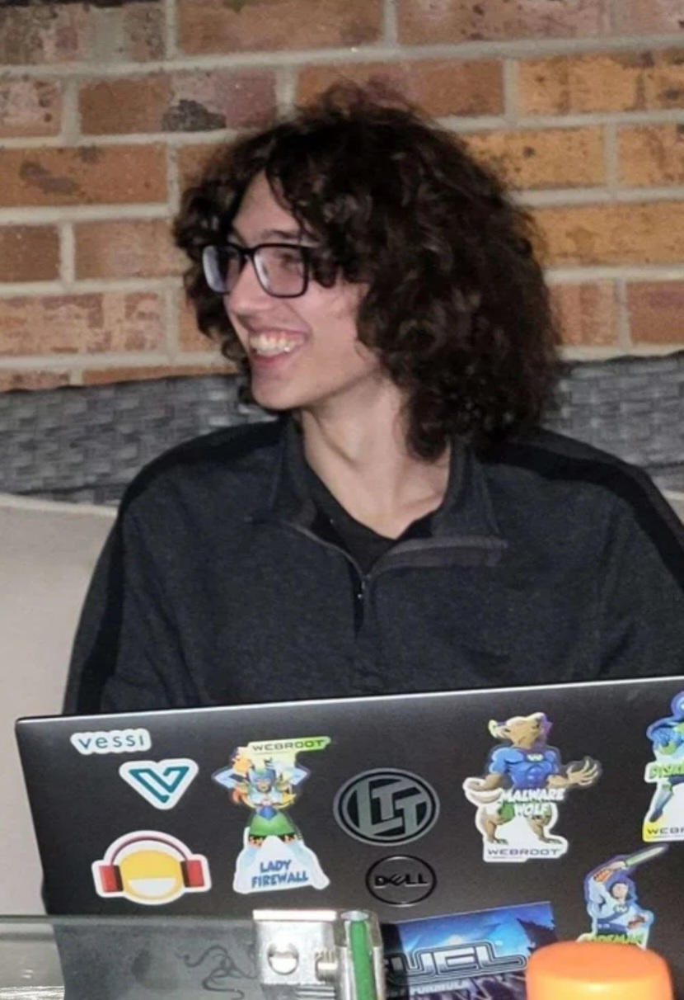

A passionate systems programmer with a strong interest in DevOps, eager to apply my skills to contribute and solve difficult problems.
Download Resume Iced Webview
Iced Webview
A Iced library to embed webpages in native iced applications
Icy_browserAn Iced library built on Iced web view to build browser. Includes tab bar, navigation bar, and bookmark bar
Rust browserUses the above two libraries to create my own shortcut driven browser in Rust!
This is repo where I host all the containers I use in my Homelab along with all the Ansible scripts and CI/CD that makes the magic happen. This is also the server I am using to host this very site. Magical!
I can't forget about this site! A static site written in Rust which uses the rocket webserver to create blazingly fast static sites like this one. I am using github actions to build a new container and my homelab repo to automatically run ansible and redeploy this site